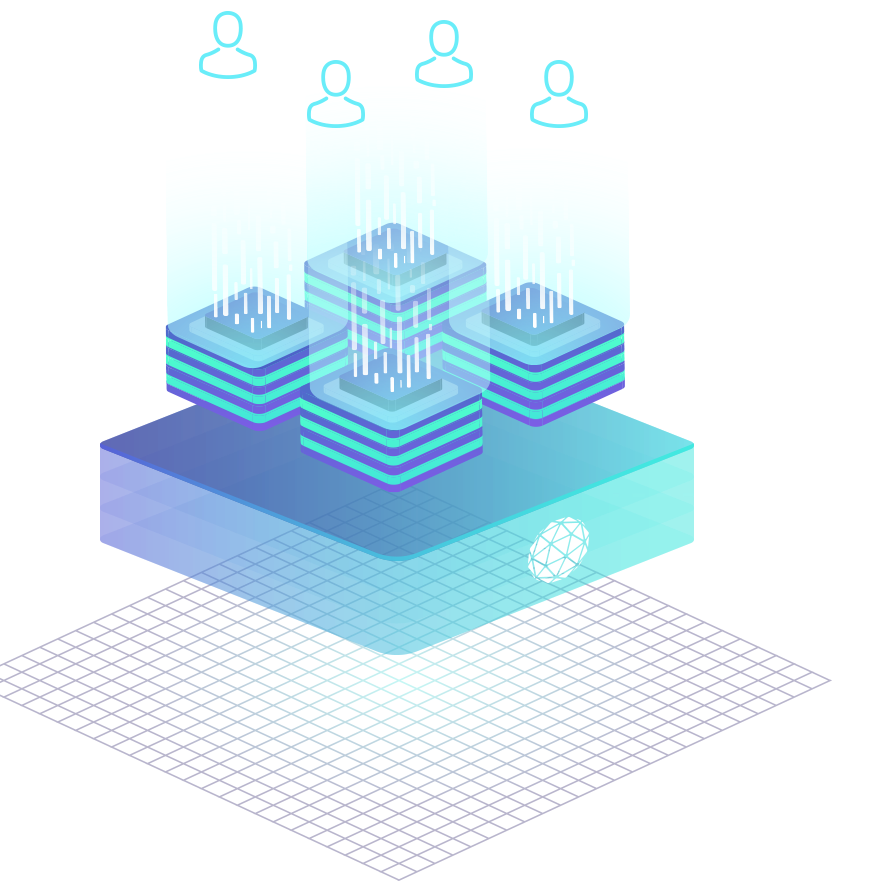
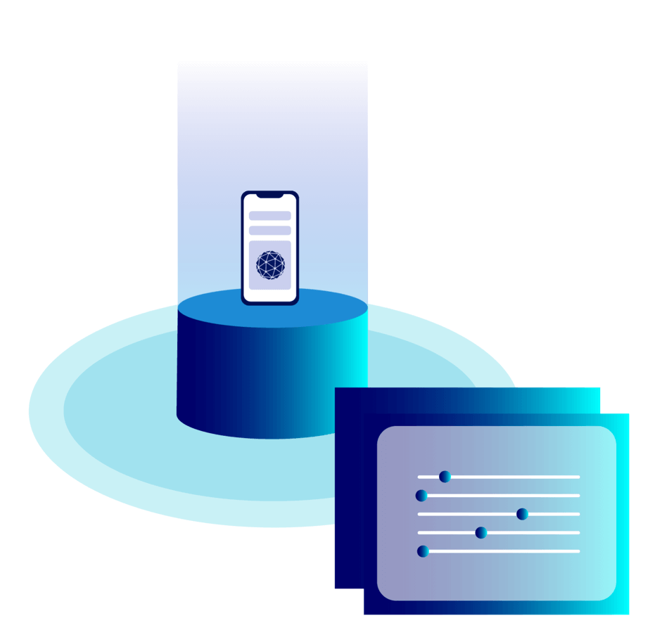

טכנולוגיה
Orbs is a public blockchain infrastructure designed for enterprises. Unlike private and permissioned blockchain solutions typically used for enterprise, the Orbs infrastructure is open and permissionless. The Orbs protocol is decentralized and executed by a public network of permissionless validators using Proof-of-Stake consensus.
The Orbs protocol relies on the ORBS token used for the settlement of fees related to app execution and provides the system of incentives used to elect validators in a secure and decentralized manner.
ענן ללא שרתים למפתחים
The Orbs platform is a decentralized serverless cloud allowing app developers to build backend services (apps) that are then deployed to be executed by Orbs validators. The main offerings of the platform include compute under consensus (execution of “smart contracts”) and storage under consensus.
קונצנזוס היברידי
Today’s blockchain infrastructure landscape is polarized where solutions are moving between two extremes: public blockchains like Ethereum - permissionless infrastructure designed for decentralized apps; and private blockchains like Hyperledger - permissioned infrastructure designed for permissioned apps.

אחריות מגובה בלוקציין
Under Orbs, the value of public blockchain is defined as the ability to facilitate trust by creating apps providing blockchain-backed guarantees to their users and partners. These include auditability - the ability for users to know the app protocol and audit its data; forkability - the ability for users to leave the app with their data; governance - the ability to enforce how the app protocol changes.
יצרני בלוקים מול ולידטורים
The first step of blockchain consensus is selecting a node to choose transactions and create a block, the second is for other nodes to validate the block and approve it. These steps are typically performed by the same nodes. The Orbs protocol separates these roles to two different node types - block producers that create blocks and validators that approve them.